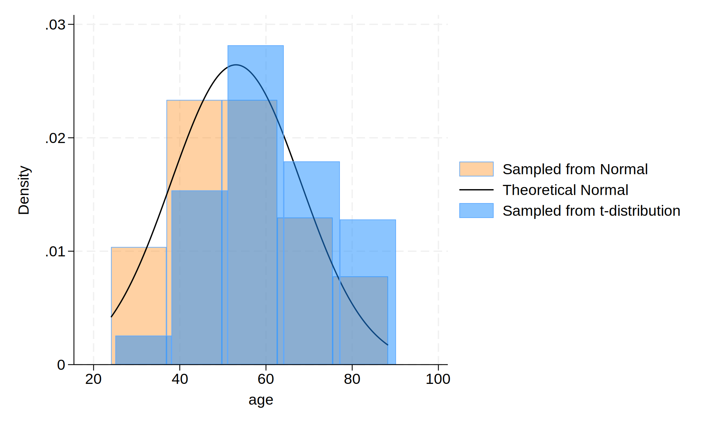

Methods: First, we initialized their dataset with 30 observations. Then, we created an age variable following normal distribution with a mean of 57 years and a standard deviation of 15. Alternatively, we simulated a t-distribution. We plotted a histogram of the age variables from both normal distribution and t-distribution to check the patterns.
. cls
. clear
. set seed 123123
. set obs 30
Number of observations (_N) was 0, now 30.
. gen age=(rnormal()*15)+57
. gen age_t=(rt(_N)*15)+57
. hist age, ///
> fcolor(orange%40) /// simulated normal
> addplot(hist age_t, fcolor(midblue%50)) /// simulated t-dist
> ribution
> normal /// theoretical normal
> legend(on ///
> lab(1 "Sampled from Normal") ///
> lab(2 "Theoretical Normal") ///
> lab(3 "Sampled from t-distribution") ///
> )
(bin=5, start=24.055111, width=12.854745)
. graph export hist.png, replace
(file hist.png not found)
file hist.png saved as PNG format

. display c(N)
30
. display c(k)
2
. list in 1/5
+---------------------+
| age age_t |
|---------------------|
1. | 45.98039 72.56239 |
2. | 55.18299 52.15041 |
3. | 42.21448 65.43298 |
4. | 71.92942 65.18758 |
5. | 76.68743 63.37706 |
+---------------------+
Results Based on the simulated data, we found that the observed age distribution generated from the normal distribution roughly matches the theoretical one: $ \text{Age, years} \sim \mathcal{N}(\mu = 57, \sigma^2 = 225) $. According to the histogram, we can see that the normal distribution displays different format of t-distribution.
Footnote The results are based on simulated data.